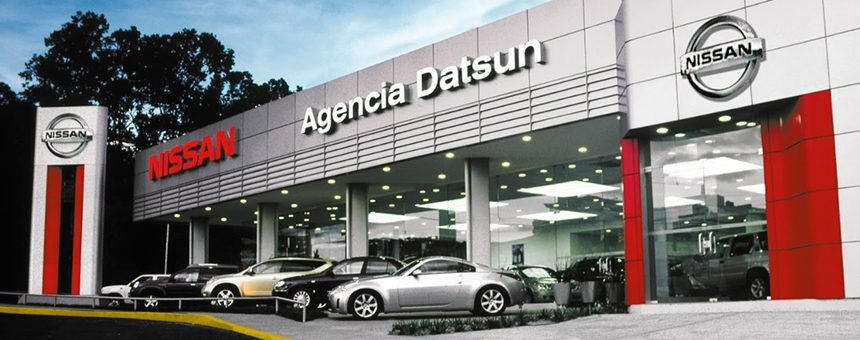

Nissan Motor Co., Ltd. Es un fabricante japonés de automóviles, con base en Nishi-ku (Yokohama). Su nombre común, Nissan, es un acrónimo de "Nippon Sangyo". Está entre las principales compañías automotrices en términos de producción anual de vehículos.
Nissan en Costa Rica
En 1960 dio inicio una pequeña empresa que con gran esfuerzo y trabajo sentó las bases de lo que hoy es Agencia Datsun. El camino no fue fácil, era una época de autos europeos y americanos y en este momento se introdujeron los primeros Datsun pick up, station wagon y sedán que ayudaron a empezar el posicionamiento de la marca.

Agencia Datsun